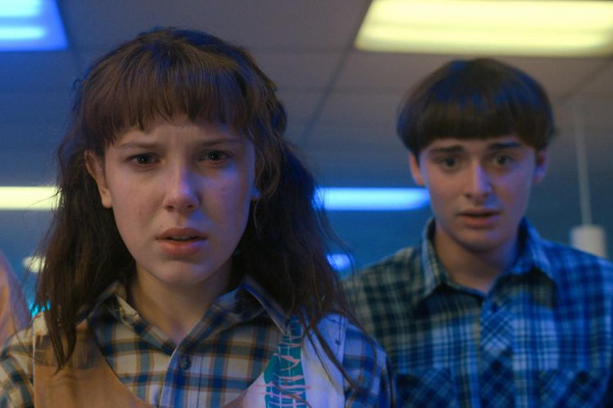
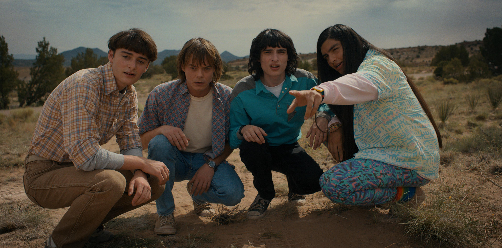
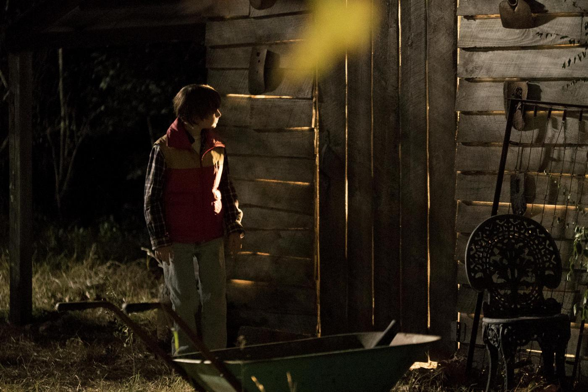
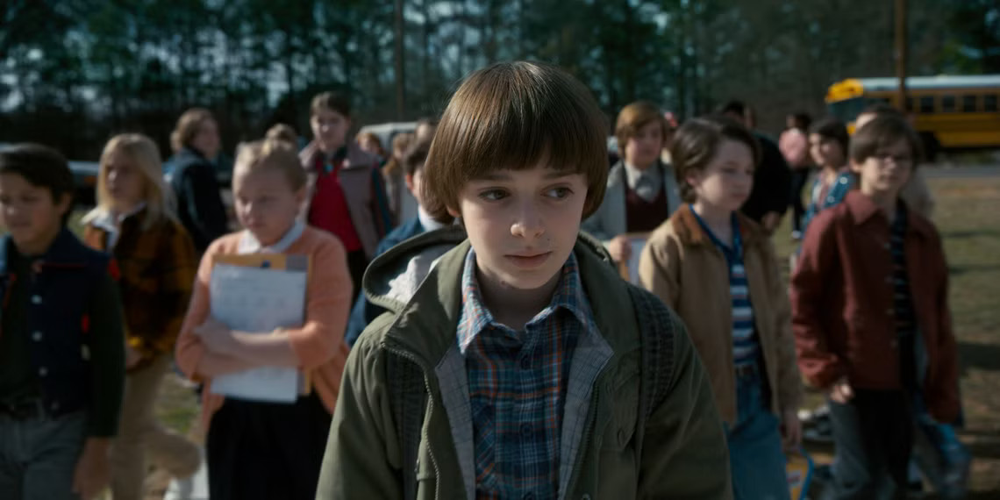

Episodios
Episodio 1: "La desaparición de Will Byers"

La historia comienza en la pequeña ciudad de Hawkins, Indiana, en 1983. Tras una noche de juegos con sus amigos Mike, Lucas y Dustin, Will Byers desaparece misteriosamente de camino a casa. Al día siguiente, su madre, Joyce Byers, y su hermano mayor, Jonathan, notan su ausencia y contactan al jefe de policía, Jim Hopper, quien inicia la búsqueda. Paralelamente, en las afueras del pueblo, una niña extraña con la cabeza rapada y habilidades sobrenaturales escapa de un laboratorio secreto. Esta niña, conocida como Once (Eleven), encuentra refugio en una cafetería y pronto cruza caminos con los amigos de Will, quienes deciden ayudarla.
Episodio 2: "La niña rara de la calle Maple"

Mike, Lucas y Dustin esconden a Once en el sótano de la casa de Mike. A través de breves palabras y gestos, la niña revela que conoce a Will y que está huyendo de personas peligrosas. Mientras tanto, Joyce sigue convencida de que su hijo está vivo y comienza a notar señales extrañas en su casa, como luces parpadeantes y ruidos misteriosos. Hopper investiga el laboratorio y empieza a sospechar de la versión oficial sobre la desaparición de Will. Por otro lado, Nancy Wheeler (hermana de Mike) y su mejor amiga Barb asisten a una fiesta, donde Barb desaparece bajo circunstancias inquietantes.
Episodio 3: "Luces navideñas"

Joyce, desesperada, cuelga luces de Navidad por toda la casa creyendo que Will intenta comunicarse con ella a través de ellas. Efectivamente, Will logra enviarle mensajes simples como “ALÉJATE” y “AQUÍ” usando las luces. Mike, Dustin y Lucas tratan de obtener más información de Once, quien les explica que Will está “escondido” en un lugar aterrador que ella llama "el Otro Lado". Nancy busca a Barb y se da cuenta de que algo extraño le ha sucedido. Mientras tanto, Hopper continúa su investigación y descubre conexiones sospechosas entre el laboratorio y las desapariciones.
Episodio 4: "El cuerpo"

El laboratorio manipula la investigación y la policía encuentra un cuerpo que aparentemente es el de Will, lo que deja devastada a Joyce, aunque ella sigue convencida de que no es realmente su hijo. Jonathan, afectado por la situación, se une a Nancy para investigar la desaparición de Barb y descubren una criatura monstruosa en una fotografía. Mike se enfrenta a la decepción y la rabia tras la noticia del “cuerpo” de Will, pero Once le muestra que Will sigue con vida y logra comunicarse brevemente con él a través de la radio. Hopper, sospechando que algo no encaja, decide investigar por su cuenta y se infiltra en el laboratorio.